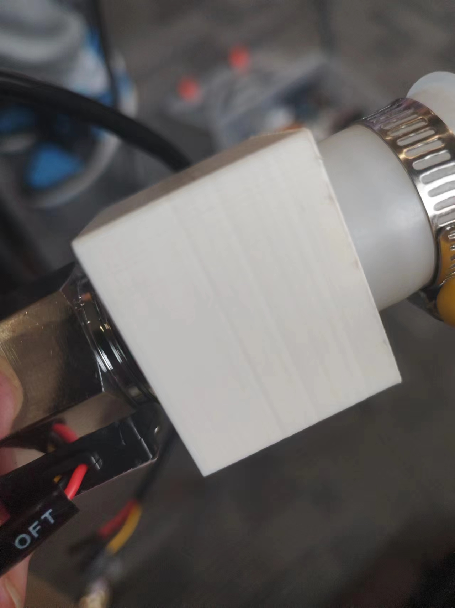

Introduction to 3D printing related technical knowledge
New applications
Precision electronic instruments
3D printing technology has broken through the limitations of traditional manufacturing and provided designers with unlimited design space. Traditional manufacturing methods, such as wooden lathes, rolling mills, and molding machines, are limited by their tools and processes and can only manufacture products of specific shapes. However, 3D printers are not limited by these limitations and can manufacture complex geometric shapes that are difficult or even impossible to process with traditional techniques. Its working principle is to decompose objects into layers of 2D areas for printing, so it can process any complex object, and its accuracy depends on the minimum material particles that the printer can output. This technology brings enormous possibilities for geometric design and optimization
For example: Fiber optic connectors
New 3D technologies and prospects
Associate Professor Zhang Hao from the Department of Chemistry at Tsinghua University, Academician Li Jinghong, Associate Professor Lin Linhan from the Department of Precision Instruments, and Professor Sun Hongbo have jointly developed a universal 3D printing method for nanomaterials, abbreviated as 3D Pin. By introducing photosensitive nitrogen-containing small molecules, a variety of inorganic nanomaterials (semiconductor, metal, oxide nanomaterials) have been printed at the nanoscale. The structure has a high proportion of inorganic components and excellent mechanical and tunable optical properties. The relevant research results were published in Science with the title "3D printing of inorganic nanomaterials by photochemically bonding collisional nanocrystals"
Using slicing software
3D modeling
Parameter settings
| 壁厚 |
壁走线次数 |
水平扩展 |
顶层/底层厚度 |
顶层厚度 |
顶部层数 |
底层厚度 |
底部层数 |
填充密度 |
填充图案 |
生成支撑 |
支撑结构 |
支撑放置 |
支撑悬垂角度 |
支撑水平扩展 |
| 3.5mm |
9 |
0.0mm |
0.8mm |
1.6mm |
16 |
1.6mm |
16 |
20.0% |
网格 |
✔ |
正常 |
支撑打印平台 |
50.0° |
0.8mm |
Using a 3D printer
3D printing process
Import relevant files into the hard drive and insert them into the 3D printing device
Select "Print", select the relevant files and start printing. The printing time can be previewed, and after the final printing is completed, remove the heat dissipation
Connect to relevant devices after completion (preview image)

Surface post-treatment technology
Surface polishing
Due to the high precision of the 3D printing of the group's finished products, there is a relatively small demand for post-processing. Taking a network diagram as an example
Usually, after 3D printing, we choose to use tools such as sandpaper to polish the surface of the finished product, making it smoother and more aesthetically pleasing, and can also remove some abrupt burrs and dirt
Back